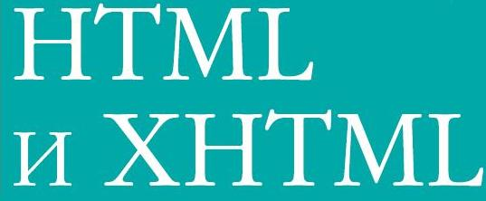

|  | ||
HTML и XHTML
div style="background-image:url(file:///./img.jpg); width:566px;height:640px;border-width:5px;border-color:red;border-style:solid;"
HTML – не латинский язык, но он достиг преклонного возраста уже
к версии 4.01. Консорциум W3C не планирует разработку следующей
версии, и об этом объявлено официально. Напротив, HTML получил
обоснование и внешнюю форму, став частью расширяемого языка раз
метки (Extensible Markup Language, XML). Его новое имя – XHTML
(Extensible Hypertext Markup Language, расширяемый язык разметки
гипертекста).
Появление XHTML – лишь еще одна глава в непростой истории HTML
и Интернета, где путаница – это скорее норма, чем исключение. Хуже
всего было, когда в период «броузерных войн» между Netscape и Mi
crosoft старейшины W3C, ответственные за разработку и принятие
приемлемых стандартов языка, потеряли контроль над языком. Стан
дарт HTML + оказался не слишком удачным, а обсуждение HTML 3.0
настолько затянулось, что W3C просто положила весь проект на пол
ку. Что бы ни утверждали в своей литературе предприимчивые деяте
ли рынка, HTML 3.0 так и не появился. Вместо этого в конце 1996 года
производители броузеров убедили W3C выпустить стандарт HTML
версии 3.2, единственной целью которого было «узаконить» (вклю
чить в стандарт) большую часть расширений HTML для ведущего бро
узера (Netscape).
Доминирование Netscape в качестве ведущего броузера и лидера веб
технологий практически сошло на нет в конце ХХ века. К этому време
ни корпорация Microsoft эффективно встроила Internet Explorer в опе
рационную систему Windows не только в качестве очередного прило
жения, но и как главную функциональную возможность графического
пользовательского интерфейса. Кроме того, броузер Internet Explorer
обладал функциональностью (нестандартной на тот момент), которая
была принципиально ориентирована на растущий бизнес и маркетинг
в Интернете.
|
текст | |
| текст | ||